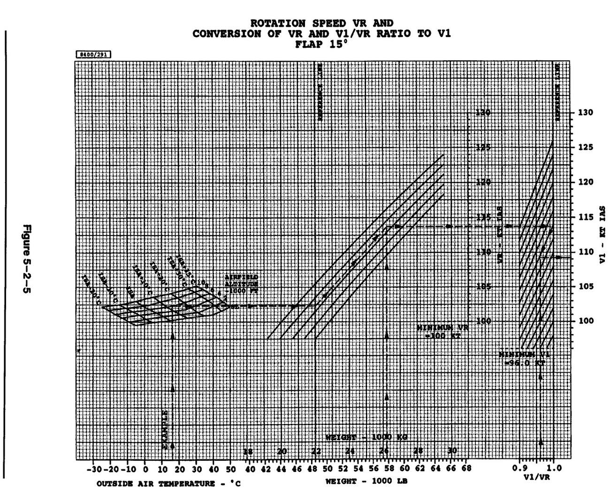

Lesson 05: V1 Reductions and Take-off Speeds
Learning objectives
- Explain how a V1/VR split changes TOR, TOD and ASD.
- Use the V1/VR ratio in the AFM.
- Read VR and V1 from the rotation speed chart.
V1 ≤ VR ≤ V2.
Splitting V1 and VR
When V1 is reduced below VR (V1/VR ratio below 1.0):
- The accelerate-stop distance decreases — the stop starts at a lower speed.
- The take-off distance increases — after an engine failure at the lower V1, the aeroplane accelerates longer on one engine to VR.
- The take-off run also increases slightly.
When the take-off is ASD-limited and there is spare take-off distance, a V1 reduction moves the take-off towards balance and allows a higher weight.
Exercise result
At 49,000 lb with a reduced V1/VR ratio, the exercise gave a take-off run of about 2,800 ft, a take-off distance of about 3,100 ft and an accelerate-stop distance of about 2,800 ft — all within the corrected distances.
Rotation speed and V1
The rotation speed chart gives VR from OAT, pressure altitude and weight, then converts VR to V1 with the V1/VR ratio. In the exercise, VR was about 102 KIAS. The chart also shows the minimum VR (based on VMCA) and the minimum V1 (VMCG).

Sanity check of the speeds
Always check: V1 ≤ VR ≤ V2. A set such as V1 120, VR 128, V2 138 is consistent; V1 above VR, or V2 below VR, is not.
Use the AFM supplement data: V1 is reduced, the screen height is lower and the take-off weight may be restricted. Reduced take-off power is not used on contaminated runways.
Key takeaways
- V1/VR split: ASD down, TOD and TOR up.
- Use it when ASD-limited with spare TODA.
- Always V1 ≤ VR ≤ V2; V1 ≥ VMCG.
Knowledge check
How does a V1/VR split affect the TOD and ASD?